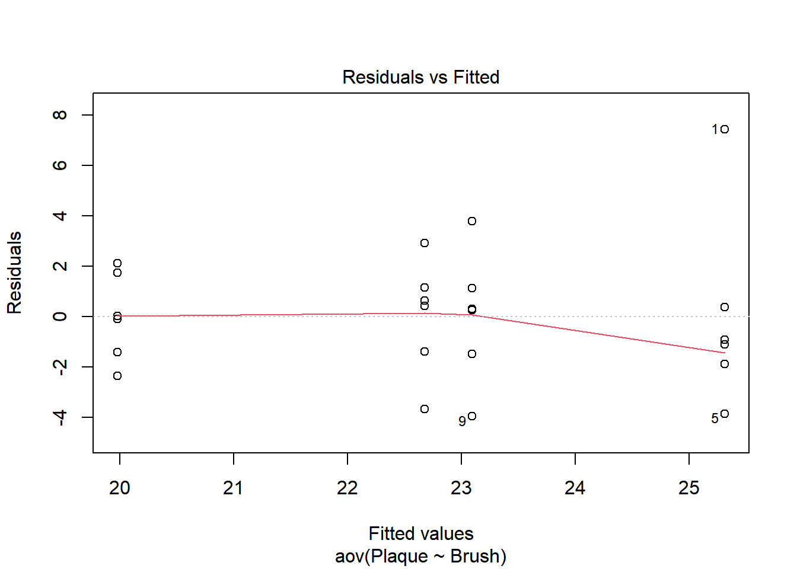
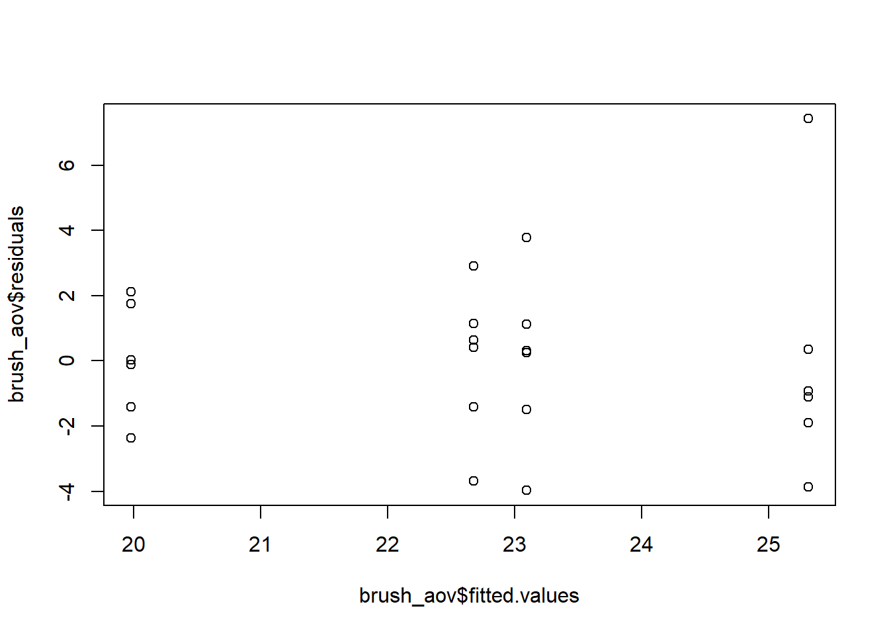
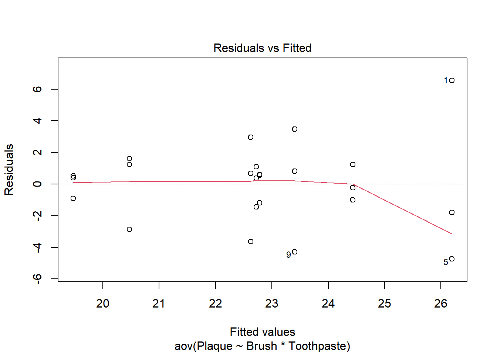
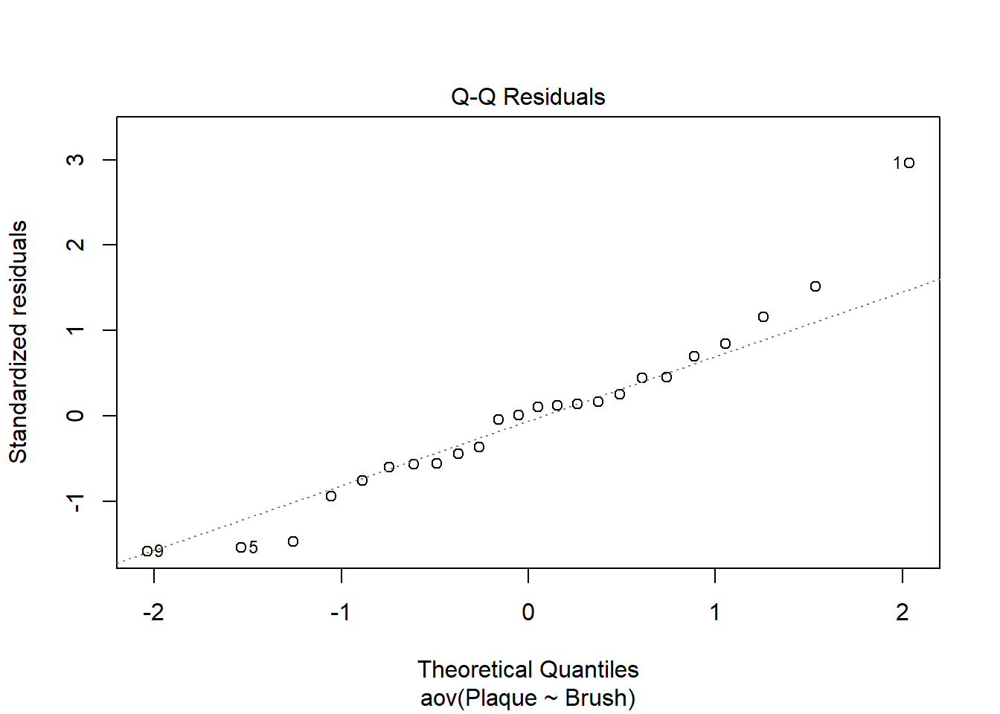
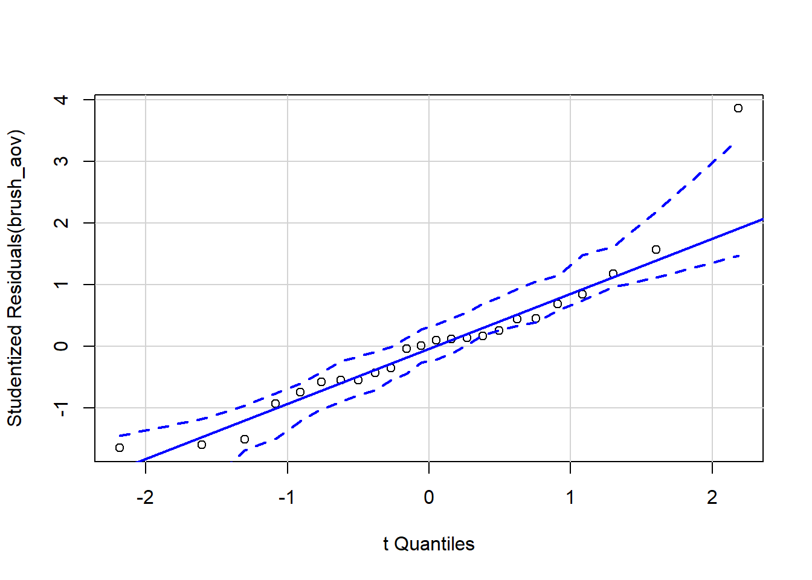
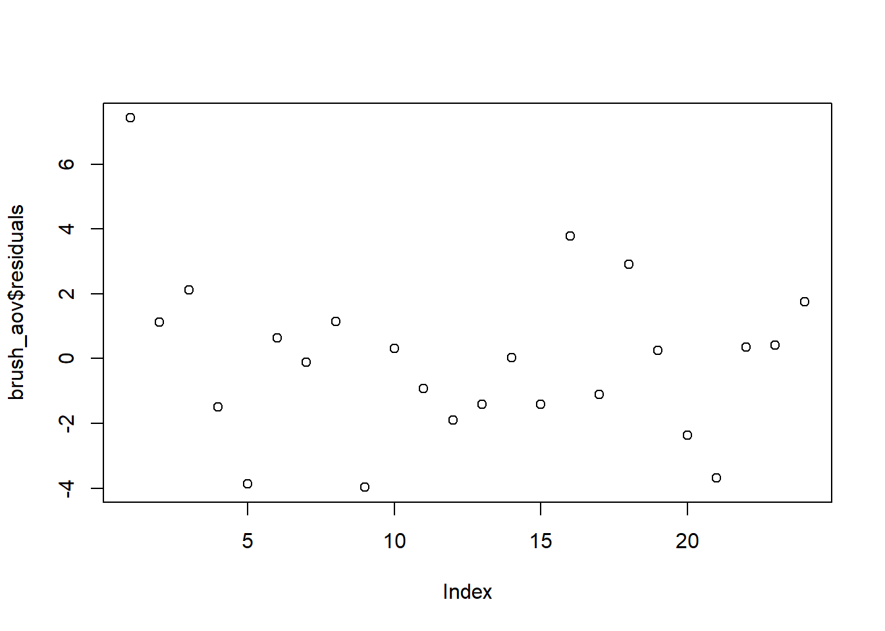

For our ANOVA F test results and model predictions to be trusted, certain assumptions, or requirements must be met.1
The terms “requirements” and “assumptions” are often used interchangeably when referring to the set of conditions that must be met for the model to be a valid representation of the data.
By way of review, here is the mathematical expression of the model for 1 structural factor. If we incorporated more factors into our study we would need to add additional terms to the model to represent that factor’s effects, as well as any interaction effects.
\(\alpha_i\) represents the effect of factor level \(i\)
\(\epsilon_\text{ij}\) is the residual error for the \(j^\text{th}\) observation in factor level \(i\)
\(\epsilon_\text{ij}\) is a random variable and most of the assumptions are focused on defining the distribution of this random variable. Namely, we assume that each residual comes from the same normal distribution, with mean 0 and standard deviation \(\sigma\). Figure 1 illustrates the same residual distribution visually applied to three distinct factor levels. The assumptions and how to check them are explained in more detail below.
Figure 1: Same distribution can be used to describe the residuals from each factor level
Center
The model assumes the mean of the residuals equals zero. The residual is the distance from an observation to its respective factor level mean, or predicted value. This assumption is the reason calculating a mean of observations makes sense as an estimate of the true mean of a factor level. Each observation is made up of two parts: a true part and some random error. If we have 3 observations all from the first factor level (the first subscript is always one because the observations all come from the first factor level):
Since the mean of the residual errors is assumed zero, the second term goes to zero and the mean of observations is the best estimate of the true value. Of course, the more observations we average over the better our estimate of the truth will be.
This requirement does not need to be checked since we are guaranteed this will occur based on how we calculate factor level effects. This is evident with the level effects for a factor summing to zero.
Constant Variance
The spread of the distribution of residuals is expressed in terms of the variance, \(\sigma^2\). Hypothesis tests of the factors assume that the variance of residuals will be the same regardless of the factor level. Consider the conveyor belt analogy. All the observations go down the same conveyor belt. The conveyor belt does not split into multiple branches just before the last, random station. All the residuals come from the same distribution.
In the F-statistic calculation the denominator is a pooled variance; or in other words, an average of the within factor level variances. When factor level sample sizes are unequal, then the average variance is biased toward the factor level with the largest sample size. Thus, it becomes important to show that the variance estimate within each factor level is (relatively) equal when sample sizes are not equal. The greater disparity in sample sizes, the more important it is to have similar within factor levels variances. (Inflation of Type I error tends to be worse if the smallest group has the largest variance.) The F-distribution used to calculate p-values is based on the assumption of equal variances. When there is non-constant variance, the ratio of between group variance to within group variance no longer follows the F-distribution and the p-value calculations will be off.
Type I error mean rejecting a true \(H_o\)
The simplest, quickest, and most common way to check this assumption is a visual assessment of a residual plot. A residual plot shows the residuals on the y-axis and the predicted values on the x-axis. (In the case of just one structural factor, the factor levels are sometimes shown on the x-axis instead). The assumption is satisfied when the vertical spread of the data points within each factor level is roughly the same. This is called homogeneity of variance or homoscedasticity. When the spread is not the same it is called heterogeneity of variance, or heteroscedasticity.
Figure 2 shows the residual plot in our toothbrush example where the effectiveness of 4 different types of toothbrush were studied.
Code
bf2 <-read_csv("data/toothpaste_BF2.csv")brush_aov <-aov(Plaque~Brush, data = bf2)which =plot(brush_aov, which =1)

Figure 2: Residual vs. Fitted plot to check constant variance assumption
Red Line in the Residual Plot
Ignore the red line in the residual plot. It can trick your eyes and draw your attention to the wrong thing. It is not meant to gauge constant variance.
With a little extra coding you can get a residual plot without the red line. Additional code is required to clean up the labeling.
Code
bf2 <-read_csv("data/toothpaste_BF2.csv")brush_aov <-aov(Plaque~Brush, data = bf2)plot(brush_aov$fitted.values, brush_aov$residuals)

Figure 3: Residual vs. Fitted plot without a red line
The points in Figure 2 are in 4 vertical groupings corresponding to the factor levels of toothbrush. This is to be expected because the x-axis shows predicted, a.k.a. fitted, values. Each toothbrush has a different predicted plaque value. The group of points on the far left appears less vertically spread out than the group of points on the far right.
Of course, the factor levels will never all have exactly equal variance. How different does the spread in this plot need to be to conclude that the assumption is met or is violated? It is subjective and experience will help you spot trouble in the plot. You can also employ additional methods to help detect non-constant variance.
Rules of Thumb for One-way ANOVA
As a rule of thumb, in one-way ANOVA (i.e. just one independent factor) you can check to see if the largest standard deviation is more than double the smallest standard deviation. Table 1 shows summary statistics for the toothbrush example. The smallest standard deviation of 1.7 belongs to the oscillating brush. The largest standard deviation of 3.9 belongs to the ultrasonic brush. Because \(2*1.74 = 3.48 < 3.90\), by this rule of thumb the constant variance assumption appears to be violated.
The rule of thumb is too stringent, and therefore not recommended, for anything but a one-way ANOVA.
Code
favstats(Plaque~Brush, data = bf2) |>kable(digits =2)
Table 1: Summary statistics for each toothbrush
Brush
min
Q1
median
Q3
max
mean
sd
n
missing
Manual
19.12
22.04
23.38
24.01
26.88
23.09
2.60
6
0
Oscillating
17.62
18.89
19.94
21.29
22.09
19.98
1.74
6
0
Sonic
18.99
21.73
23.20
23.68
25.58
22.67
2.27
6
0
Ultrasonic
21.45
23.62
24.30
25.35
32.74
25.31
3.90
6
0
Levene’s Test
There are formal hypothesis tests that can help determine if variance is equal across factor levels. One such test is the Brown-Forsythe test, also known as Modified Levene’s test or sometimes shortened to Levene’s test.2 The hypothesis for this test is
\[
H_0: \sigma_1 = \sigma_2 = … = \sigma_i \\
\]
\[
H_a: \text{At least one sigma is different from the rest}
\]
The test essentially runs an ANOVA F-test on the factor level variances to determine if the variances are equal. If the p-value of the test is low and the null is rejected, then you would consider the assumption violated. As the researcher, you are hoping to fail to reject the null hypothesis so that you may continue on with your analysis.
Use the following code from the car package to run Levene’s test in R.
leveneTest(model_name)
Where leveneTest is the name of the function that will run the test, and model_name is the name you assigned the model created with the aov() function.
Levene’s test requires a full model. All factor levels and interactions need to be present in the model. Levene’s test also requires at least 2 observations in each factor level combination since it needs to calculate a variance. For this reason, Levene’s test cannot be used on some designs, like complete block or latin squares, without some adjustments.
Don’t Forget to Think
It is tempting to turn off your brain and simply run the test or use a rule without looking at the data or thinking of the impact. Do NOT do this. In fact, you can often get by without running this test at all. It is better to consider the sample sizes, outliers, general shapes of the distributions, and effect sizes relative to variance within each factor level. Think about how different the groups of residuals really are rather than blindly trusting a rule.
Code
leveneTest(brush_aov) |>kable()
Table 2: Levene’s test output for the toothbrush example
Df
F value
Pr(>F)
group
3
0.2498376
0.8604884
20
NA
NA
For the toothbrush example, the p-value of Levene’s F-test in Table 2 is .8605, indicating the null hypothesis of constant variance cannot be rejected. (It is not uncommon for this hypothesis test to disagree with the rule of thumb.) It appears that one outlier in the upper right portion of Figure 2 is the main reason the rule of thumb approach indicated the assumption had been violated. If that point is ignored, the groups do look more alike and the rule of thumb agrees with the Levene’s test.
This is not to suggest the point be removed from the analysis; rather, to recognize the impact an outlier can have on the assumptions. This is especially true when the methods of checking the assumption don’t agree.
More than 1 structural factor
Consider the slightly more complicated example where researchers investigated toothpaste brand (name brand vs. off brand), toothbrush type, and their interaction.
In this case, the residual vs. fitted plot has 8 different vertical groupings - one for each factor level combination of brush and paste. Look for overall trends or megaphone shapes in the residual plot as indicators that the assumption of constant error variance may be violated. For example, does the spread of the residuals increase as the fitted value increases? Or, does the spread of the residuals decrease as the fitted value decreases?
Code
brush_aov2 <-aov(Plaque~Brush*Toothpaste, data = bf2)which =plot(brush_aov2, which =1)

Figure 4: Residual vs. Fitted plot to check constant variance assumption for the 2-factor example
Figure 4 shows a slight megaphone shape. As we move from left to right along the x-axis the spread of the points increases (with the exception of the points at x=24.5). We can use a Levene’s test to help us determine if heterogeneity of variance is a problem. The result is shown in Table 3.
Code
leveneTest(brush_aov2) |>kable()
Table 3: Levene’s test output for the 2-factor example
Df
F value
Pr(>F)
group
7
0.8834329
0.5409189
16
NA
NA
With a p-value of .541 we fail to reject the null hypothesis. It appears the constant variance assumption is met.
Shape: normal residual distribution
The ANOVA model assumes that residuals will follow a (approximately) normal distribution. To check this assumption we use a Q-Q plot.
There are statistical tests for normality as well, but each come with their own set of drawbacks. Due to the robust nature of the F test, a visual assessment is usually sufficient.
The “Q” in Q-Q plot stands for quantile. For an explanation of quantiles and their relationship to percentiles go here. There are many variations of Q-Q plots and each software computes it slightly differently. The general concept is to plot two quantities on a scatter plot:
The Q-Q plot is actually just a scatterplot created from ordered pairs. Each ordered pair consists of a residual from the model (that’s easy to find!) and the quantile from the normal distribution associated with that residual.
But how do you find a quantile from the normal distribution? To get this, each residual is converted into a sample quantile, then the theoretical Z score from the normal distribution associated with that quantile is calculated. For example, if I had 20 residuals I would calculate the 1/20 quantile (a.k.a. fifth percentile) from the z-distribution. From Figure 5 (a) I can see the 5th percentile of the Z distribution is -1.645. My first ordered pair on the scatterplot would be the smallest residual and the value -1.645.
Figure 5: Z-score calculations from desired percentile
The next point on the Q-Q plot would be my second smallest residual on the y-axis and the \(2/20 = .10\) quantile from the Z distribution on the x-axis. The 0.10 quantile is -1.282 as seen in Figure 5 (b).
This process would be repeated for all 20 residuals.
If the sample data is normally distributed then the resulting plot of the two quantities will roughly be a straight line. The residuals will never be exactly normal, of course. Some amount of “wiggle” should be allowed.
Figure 6 is a Q-Q plot for the toothbrush example.
Code
plot(brush_aov, which =2)

Figure 6: Q-Q plot of residuals for tootbrush 1-factor ANOVA example
It can be difficult to tell if the line is straight enough. qqPlot from the car package (see Figure 7) adds boundary lines to help you determine if the points are out of bounds4. If sections of the plot are out of bounds the assumption of normally distributed residuals can be considered violated.
Code
#The envelope argument controls whether the region between the lines is shaded or notcar::qqPlot(brush_aov, envelope =list(style ="lines"), id =FALSE)

Figure 7: Boundaries added to Q-Q plot of residuals for tootbrush 1-factor ANOVA example
A point on the far right is clearly out of the dashed boundary. It is not uncommon for 1 or 2 points at either end of the x-axis to stray far from the line. Overall, however, the points in this plot tend to follow the line and stay in bounds. We can conclude that the assumption of normally distributed residuals is met.
Notation
So far we have shown the residuals come from a normal distribution, with mean zero and a standard deviation (sigma). This is expressed mathematically as \(\epsilon\) ~ N( 0, \(\sigma\) ).
The epsilon, \(\epsilon\), refers to the residuals.
The ‘N(0, \(\sigma\))’ stands for normal distribution with a mean of zero and a standard deviation of sigma.
The tilde, ~, means the residuals come from that distribution.
Independent observations
In addition to making assumptions about the distribution of residuals, we also make an assumption regarding individual observations, or realizations, from the distribution of errors. Specifically, we assume each observation from the error distribution is independent of the rest. In other words, the residuals are not correlated with each other in any way.
This is violated when something is affecting the response that was not adequately randomized, controlled for, or included in the model. Not adequately accounting for treatment order in time or space is often a culprit. For example, suppose you run an experiment where respondents were given a task to complete under 3 distinct conditions. If you did not randomize the order of the conditions or neglected to account for the fact the same respondent provided 3 observations, you would have violated this assumption.
Sometimes looking at the data can provide a clue this requirement is violated, sometimes it cannot. Looking at the Residual vs. Fitted plot is a good place to start. For example, when a model over predicts all observations in condition 1 and under predicted all observations in condition 3 it may be an indicator that you neglected to address something important (i.e. subject identification, or order of conditions) in your experiment.
An order plot can also be useful in detecting a violation of this assumption. The order plot shows each residual on the y-axis and the chronological order in which the observation was made/collected along the x-axis. Figure 8 contains the order plot for our simple toothbrush example, assuming the row number indicates the order in which each observation was actually made.
Code
plot(brush_aov$residuals)

Figure 8: Order plot for 1-factor toothbrush example
It is interesting to see in this plot that the very first observation is a bit of an outlier. Perhaps the technology wasn’t working right or the assistant had not yet learned the correct procedure for measuring percent area with plaque. As the researcher, this is something you would want to dig deeper into. An equally plausible explanation for the outlying value is that the person really did have more plaque. Throwing out the datapoint simply because it doesn’t meet your expectations or messes up your analysis is not good research.
Caution
You should not throw out data points based alone on the fact that they appear anomalous.
No other trends are evident in Figure 8. If patterns/trends are evident, you may have violated the assumption of independent observations. Perhaps a tool lost calibration over time, or subjects/researchers experienced fatigue. Whatever the cause, you will want to investigate, fix the issue, and potentially redo the experiment. It really comes down to your ability/inability to defend the validity of your study in the minds of your audience. Bias in your design or execution will lead to violating this assumption.
In many cases, the data will not indicate there is bias unless you know exactly what to look for. These unknown sources of bias are particularly difficult to detect. Planning the study in great detail, thinking critically about your results, being familiar with the protocols of the experiment, and getting help from others to provide fresh perspectives is ultimately the best way to check this assumption and ensure bias does not affect your results.
Assumptions Summary
Residual Assumption
Method for Checking
Mean is zero
Doesn’t need to be checked. This will be a direct result of how we create the model.
Constant variance across factor levels
Residual vs. fitted plot
Levene’s Test (for some designs / analyses)
Rule of thumb comparing standard deviations (for BF[1] only)
Normally distributed residuals
Normal Q-Q plot
Independent of each other
Critical thinking
Order plot
What To Do If Assumptions Are Violated?
Principles For How To Proceed
You now have some tools to help assess whether the ANOVA assumptions have been met. It is extremely common in practice to be faced with data that is in the “gray area”, and making this determination is not always easy. There are a couple of principles to keep in mind as you decide whether to proceed with the analysis or try to address potential assumption violations.
First, your p-value and test statistic values will be wrong proportional to the degree your assumptions are violated. For example, a minor violation of the homogeneity of variance assumption slightly degrades the accuracy, or truthfulness, of your F statistic. If the F statistic is quite extreme, then being off a little bit will not change the conclusions of your study.
In fact, ANOVA is robust to minor/moderate violations of the assumptions. This is the second principle to keep in mind. This means that you can still obtain reasonably trustworthy results even when there are minor or moderate violations of the assumptions. If the sample size is large and balanced, ANOVA tends to be more robust (especially with regard to the normal distribution of errors assumption). The case where skew is present and data is unbalanced is another story, and becomes particularly problematic if you plan to do one-tailed t-tests of contrasts.
ANOVA’s robustness to the mathematical assumptions does not minimize the adverse impacts of bias in a study.
Third, take into account the purpose and context of the study in the broader context. If violated assumptions can be easily fixed with a few extra lines of code, there is no reason you should not try to improve the situation. As the remedy becomes more difficult/requires more effort, the cost-benefit analysis of trying something else changes. Think about deadlines, project cost, degree of assumption violation, desired precision, and severity of consequences if a wrong conclusion is reached as you decide how to pursue solutions to violated assumptions.
Lack of time due to procrastination is not a good reason to violate assumptions.
Rather than simply stating if the assumption is met or not met, it is wise to consider the pros and cons of proceeding with the analysis and then document and explain your decision. Consider sample sizes, effect sizes, outliers, and the degree to which assumptions are met when interpreting your results. ANOVA is just one family of models, there are alternative ways to approach a problem. If the ANOVA model does not seem like a good fit, do not be afraid to ask for help or learn a new technique.
Remedial Measures
The strategy to address violated assumptions depends on how and which assumptions were violated. But beware, none of the suggested measures below can correct bias in sampling or random assignment.
If an outlier or two are the source of trouble, investigate the outlier to ensure it is valid, belongs in the study, and does not represent an error in some way.
To address non-normality of residuals you will want to know what the distribution of residuals looks like. If a histogram of residuals reveals a multi-modal distribution, that is often an indicator that there are additional populations (i.e. subgroups) that your model did not take into account. Try to identify what variable is causing the multiple modes (e.g. gender) and include it in your model.
Transforming the data is a technique that can help with the normal distribution assumption and with heteroscedasticity (lack of constant variance) simultaneously. The transformation is applied to the response variable and then the ANOVA analysis is run as usual with the new, transformed variable as the response. Though the analysis is performed using the transformed variable, you can interpret the results in terms of the original units of the response variable. Groups that differ on the transformed response tend to differ on the untransformed response variable as well.
Knowing what transformation to apply to the response variable can be a challenge. A square root, log transformation, or taking the reciprocal of the response variable are common transformations to use, especially if the response variable represents a count during a defined interval or a time until something occurs. If the response is a proportion (e.g. proportion of quiz questions answered correctly), this transformation may prove useful: \(Y_\text{transformed} = log(\frac{y}{1-y})\). If you have the data used to calculate the proportion, each “failure or”success” as it were, a logistic regression may be a more powerful tool than an ANOVA on the summarized percent.5
The Box-Cox is a more algorithmic way of choosing a transformation.
It is important to recognize that ANOVA is just one of many analysis tools available6. Kruskal-Wallis is an example of an alternative test with less stringent assumptions that can be used when there is just one structural factor present. Unfortunately, many of these alternative tests, like Kruska-Wallis, cannot be extended to more complex designs.
One other approach is to emphasize the tests of contrasts and comparisons rather than omnibus F-tests. These more specific tests can handle non-constant variances and non-normal residuals, but at the expense of increased complexity or forfeiting a broader perspective/test. In fact, many researchers skip the omnibus ANOVA F-test and will go directly to testing the specific comparisons that motivated the experiment in the first place.
Footnotes
Much of this material is summarized nicely by Keppel, G & Wickens, T (2004). Design and Analysis: A Researcher’s Handbook, Fourth Edition. New Jersey: Pearson/Prentice Hall.↩︎
Levene’s original 1960 paper proposed using the mean of factor levels in calculation of his test statistic. Brown and Forsythe (1974) investigated using the median or trimmed mean. Overtime, most statisticians have converged on using the median in the test statistic calculation if the shape of the distribution of errors is not known beforehand. This is the default in R’s car package for the Levene test. Going forward, references to Levene’s test actually refer to the Brown-Forsythe test (a.k.a Modified Levene’s Test).↩︎
The name “Q-Q plot” (with 2 q’s) comes from the fact you can plot the sample quantile of the residuals instead of plotting the residual itself: sample quantiles on the y-axis and theoretical quantiles on the x-axis. The plots we will be creating in R put the residual on the y-axis. This is simpler to interpret and to calculate because it removes the need to store the sample quantile values.↩︎
qqPlot also does a few other calculations differently, most notably it uses studentized residuals instead of standardized residuals.↩︎
See Warton, David I., and Francis K. C. Hui. “The arcsine is asinine: the analysis of proportions in ecology.” Ecology: Ecological Society of America, vol. 92, no. 1, 2011, pp. 3-10, https://doi.org/10.1890/10-0340.1↩︎
For additional alternatives consult Coombs, W. A., Algina, J., & Oltman, D. O. (1996). Univariate and multivariate omnibus hypothesis tests selected to control type I error rates when population variances are not necessarily equal. Review of Educational Research, 66, 137-179. A generalized linear model may also be helpful.↩︎